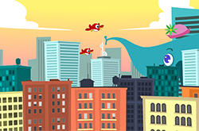

CSS3 box-shadow 屬性可以用來設計網頁中各區塊的陰影效果，如 DIV、span、img 都能夠很輕鬆的設計出好看的陰影效果，box-shadow 的用法與 text-shadow 類似，不過 text-shadow 僅適用於文字陰影，box-shadow 則更適合用於區塊或圖片身上的設計。
CSS最重要的目標是將檔案的內容與它的顯示分隔開來。在CSS出現前，幾乎所有的HTML檔案內都包含檔案顯示的資訊，比如字型的顏色、背景應該是怎樣的、如何排列、邊緣、連線等等都必須一一在HTML檔案內列出，有時重複列出。CSS使作者可以將這些資訊中的大部分隔離出來，簡化HTML檔案，這些資訊被放在一個輔助的，用CSS語言寫的檔案中。HTML檔案中只包含結構和內容的資訊，CSS檔案中只包含樣式的資訊。 比如HTML中H2標誌這一個二級標題，它在級別上比一級標題H1低，比三級標題H3高。這些資訊都是結構上的資訊。
一般來說級別越高的標題其字型也越大，H1的字型最大，因為一般來說字型越大它表示的內容就越重要，此外一般標題都使用粗體字，來突出它們的重要性。一般來說H2使用粗體字，其字型比H3大，比H1小。這些資訊是顯示用的資訊。
CSS可以有多種引入方式，一個網頁可以引入多個CSS檔案，同一種CSS規則可以被反覆多次添加。這使得CSS的使用方式非常靈活，但也會頻繁地出現規則衝突。同時對一個網頁元素設定無法並存的2種樣式時，就會引起衝突。CSS的特色之一就是其解決規則衝突的方案。CSS的規則衝突可以分為不同來源之間的規則衝突和同一來源內部的規則衝突。CSS分層次、立體化的比較不同規則的優先級的方式，就是所謂層疊性(cascading)的體現。